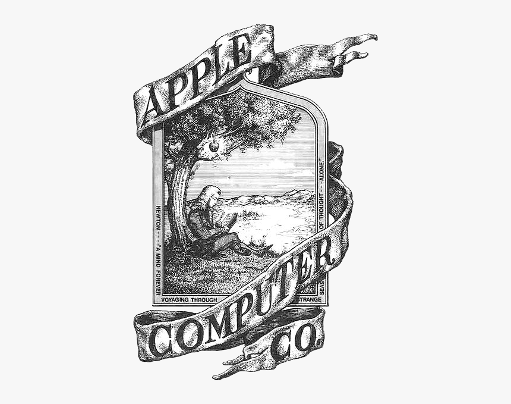
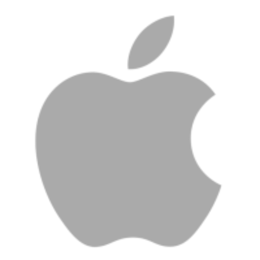

Tudo que você sempre quis saber sobre a "maçazinha"
Curiosidades sobre a história da Apple
1. Você sabia que a empresa Apple vale mais do que alguns países?
Essa "maça" carrega um peso tão grande que podemos dizer que, em 2015, a Apple foi avaliada em US$ 733 bilhões (cerca de R$ 2.4 trilhões). A quantia, à época, era superior ao produto interno bruto de dezenove países do mundo, como a Suíça (US$ 685 bilhões), Argentina (US$ 536 bilhões) e Colômbia (US$ 400 bilhões).
Algo surreal não é mesmo?
2. A Apple começou em uma garagem em 1976
A Apple foi fundada no dia 1º de abril de 1976, por Steve Jobs, Steve Wozniak e Ronald Wayne. A empresa começou em uma garagem em Los Altos, Califórnia, e inicialmente a ideia era apenas produzir computadores pessoais.
Steve Jobs era o líder de marketing da empresa, enquanto Steve Wozniak era o responsável pela engenharia. Já Ronald Wayne teve um papel menor na empresa e acabou vendendo sua participação por US$ 800 alguns dias após a fundação da Apple.
3. De onde veio o nome Apple?
Existem diversas teorias para explicar o nome “Apple” escolhido por Jobs.
Embora hoje em dia o nome “Apple” já seja bastante comum, a história por trás desse nome é bem diversa. O responsável pela escolha foi Steve Jobs, e até hoje isso vem sendo motivos para especulações e teorias.
Uma das versões mais populares é que Steve Jobs escolheu o nome Apple como uma homenagem à sua paixão pela fruta. Segundo relatos, Jobs estava em uma dieta restritiva na época e passava grande parte do tempo comendo maçãs. A escolha do nome, portanto, teria sido uma forma de refletir essa preferência pessoal.
4. O primeiro logo da Apple não foi uma maçã
A empresa nem sempre foi representada pelo famoso logo da maçã – ou, pelo menos, não apenas pela fruta.
De acordo com o site Think Marketing, o primeiro logo foi criado pelo co-fundador da Apple, Ronald Wayne, nos anos 70, e tinha bastante informação: o cientista Isaac Newton sob a árvore de onde caiu o fruto que o levou a pensar na Lei da Gravidade Universal. Para completar, uma faixa com o nome da companhia: “Apple Computer Co.”.
A partir de 1976, a empresa aderiu somente à imagem da maçã para representá-la. A princípio, era colorida e, em 1998, tornou-se monocromática. Em 2001, ganhou a tonalidade prateada e o logo atual foi lançado em 2007.
5. Mais fácil entrar para a Universidade de Harvard do que trabalhar para a Apple
Quando, em 2009, a Apple estava prestes a abrir mais uma loja na cidade de Nova York, nos Estados Unidos, 10 mil pessoas demonstraram interesse em trabalhar no local. No entanto, estavam disponíveis apenas cerca de 200 vagas, o que significa que somente 2% dos candidatos obtiveram êxito. Na Universidade de Harvard, uma das mais importantes do mundo, a taxa de aceitos é de 7%.